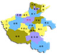

- 地理概况
河南位于中国中东部、黄河中下游，界于北纬31°23′ -36°22′，东经110°21′-116°39′之间，东接安微、山东，北界河北、山西，西接陕西，南临湖北，呈望北向南、承东启西之势。因古时为豫州，故简称豫。

- 河南气候
河南属暖温带-亚热带、湿润-半湿润季风气候。一般特点是冬季寒冷雨雪少，春季干旱风沙多，夏季炎热雨丰沛，秋季晴和日照足。
- 自然资源
河南国土面积16.7万平方公里，地层齐全，地质构造复杂，成矿条件优越，蕴藏着丰富的矿产资源，是全国矿产资源大省之一。目前，已发现各类矿产126种；探明储量的73种；已开发利用的85种。
- 河流湖泊
河南横跨黄河、淮河、海河、长江四大水系，境内1500多条河流纵横交织，流域面积100平方公里以上的河流有493条。全省水资源总量413亿立方米，居全国第19位。